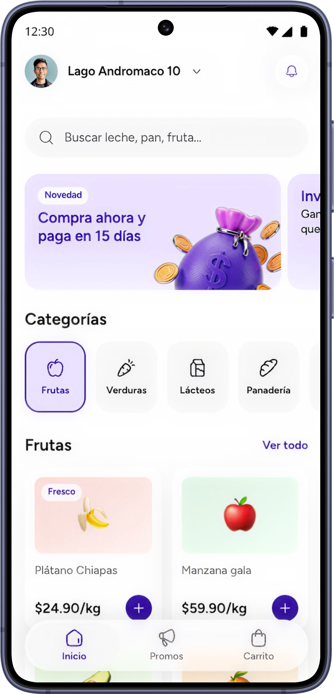

Challenge
Pide tu súper hoy,
págalo después
MVP de BNPL embebido en el checkout del súper online de OXXO, retailer piloto prioritario por facilidad de partnership dentro de Spin/FEMSA.
Usuario principal
Persona adulta, urbana o semiurbana, usuaria de supermercado online, que compra categorías necesarias para el hogar y que durante el mes, puede enfrentar una restricción temporal de presupuesto.
JTBD
Cuando tengo que hacer una compra en súper online y no tengo liquidez para pagarlo hoy, aunque ya decidí que la compra es necesaria, quiero una forma de pago que me permita recibir el pedido ahora y pagarlo después
Métricas
• LTV (Customer Lifetime Value).
• Take Rate.
• Default Rate.

Deliverables
Project plan
Plan de co-creación del MVP, fases, actividades, entregables y rollout.
Agentic-design process
Repositorio Github del proceso agentic que se usó para abordar el challenge.
Artefactos
Construidos para llegar a la propuesta. (Business Opportunity, Propuesta de Research Plan, Customer Journey y Low-fi Wireframes)
Experiencia
Prototipo del happy path el usuario esta en la app de un super, agrega productos, descubre BNPL y acepta la oferta.
Challenge presentation
Narrativa para explicar el enfoque del caso.
Un MVP responsable no persigue solo volumen
Debe demostrar que el usuario entiende lo que acepta, puede pagar sin fricción y el negocio aprende con riesgo controlado antes de escalar.